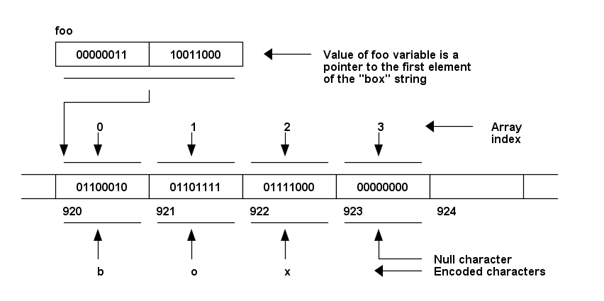
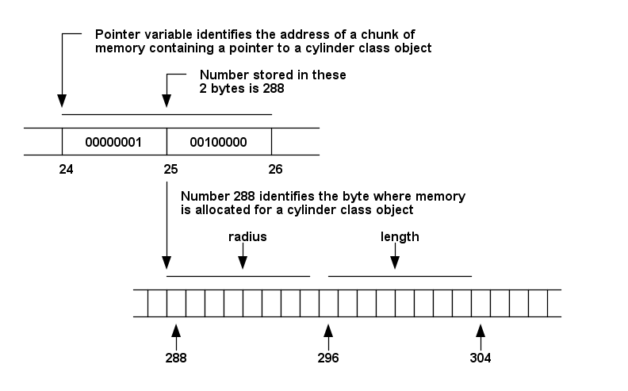
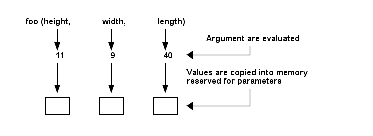
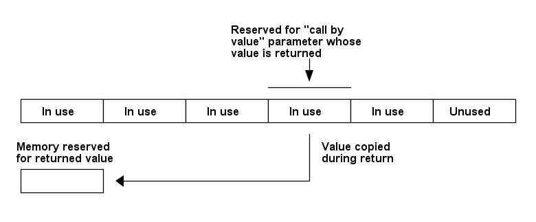
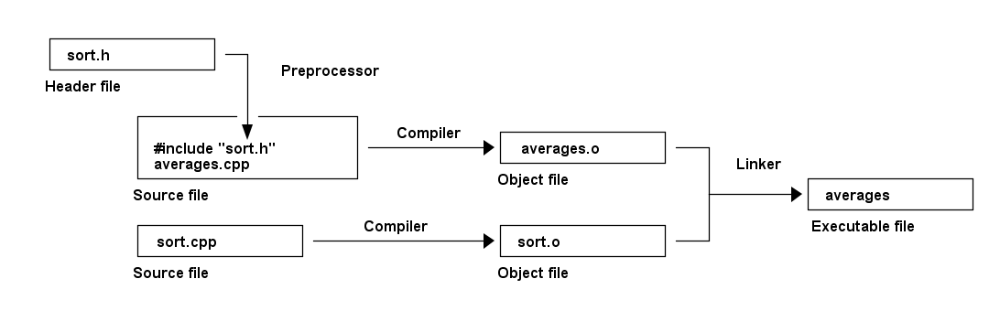

C++
1 类型
1.1 类型
| 字节 | ||
|---|---|---|
| 整数 | ||
short (int) |
2 | |
int |
4 | |
long (int) |
4 | |
long long (int) |
8 | |
| 浮点数 | ||
float |
4 | |
double |
8 | |
long double |
8 | |
| 字符 | ||
char |
1 | |
char16_t |
2 | |
char32_t |
4 | |
wchar_t |
表示支持的最大字符集的字符 | |
string |
具体字节数因编译器而定。
1.2 字符
'A' == 65;
1.3 数组
一个数组中只能存储同一数据类型的元素，因为每个元素占用的内存空间相同，才可以使用数组索引值迅速定位元素位置。
1.3.1 语法
<type> <name>[<size>];
- 定义之后，数组名成为一个常量指针，指向数组第一个元素。
- 元素数不确定时，应尽量定义一个「足够大的」数组。
int foo[10] = {1, 2, 3}; // 指定前三个元素，之后默认为 0 int foo[10] = {0}; // 全部元素初始化为 0
1.4 字符串
- 实质是字符数组。
- 由
"包围。 - 由 null 字符
\0结尾，字符串操作函数通过 null 字符来确定字符串的结尾。
1.4.1 语法
char* <name>; char* <name> = "<string>"; <name> = new char[<size>]; // 函数参数与返回值 char* foo(char* str) { return "output"; } cout << foo("input") << endl;
string <name>; string <name> = "<string>";
1.4.2 运算
string a, b, c; int l = a.size(); // 长度 a = b + c; // 连接
1.4.3 指针
- 在表达式中，字符串的值是指向字符数组第一个元素的指针。
- 当字符串用于调用函数时，传入的是指向字符数组第一个元素的指针。
- 当函数返回字符串时，返回值是指向字符数组第一个元素的指针。

1.5 列表
When using a list, instead of an array, there is no need to anticipate how many objects will be stored, so it can conserve the space that would be wasted by safe worst-case estimates.
当多个对象通过指针链接在一起时，这些对象就属于一个 列表 ，其中每一个对象称为列表的一个 元素 。
- 内部指针
- 在类中设置一个指针成员变量，使其指向另一个此类对象，以此将多个对象串联在一起。
通常不采用这种方式，因为需要对现有的、已经过测试的类进行修改，而且如果对象属于多个列表，则需要多个内部指针。 - 外部指针
- 定义一个新类，包含两个指针成员变量，一个指向下一个此类对象，另一个指向列表元素对象。
不需要修改现有类，可以创建多个列表，而且列表元素可以是子类的对象。
1.5.1 示例
从头部插入元素的列表。
template <class element_param> class element { friend class list<element_param>; private: element *next; element_param *object; element(element_param *o, element *e) { object = o; next = e; } } template <class list_param> class list { public: list() { first = NULL; current = first; } void add(list_param *object) { first = new element<list_param>(object, first); current = first; } void advance() { current = current->next; } int is_end() { return !current; } void reset() { current = first; } list_param* access() { return current->object; } private: element<list_param> *first; element<list_param> *current; }
list my_list; my_list.add(new foo()); ... my_list.reset(); for (; !my_list.is_end(); my_list.advance()) { cout << my_list.access()->attr << endl; }
1.6 类型检验
Foo* test = dynamic_cast <Foo*> (obj); if (test != NULL) cout << "object of class Foo" << end; else cout << "not object of class Foo" << endl;
1.7 类型转换
1.7.1 隐式类型转换
当数学运算的操作数为不同类型时，较短的类型会被自动转换为较长的类型，以不丢失信息，如 int 与 float 进行运算时被转换为 float 。
当长类型的值被赋值给短类型的变量时，编译器会给出警告，如 float 值被赋给 int 变量。
1.7.2 显式类型转换
(<type>) <expr>
a = (double) b;
2 变量
2.1 声明 vs 定义
| 声明： | 告知编译器一个标识符（变量、函数、参数）占用的内存空间（数据类型的长度），但不分配内存。 |
|---|---|
| 定义： | 使编译器在编译时分配内存。 |
- 变量只可以被定义一次，但可以声明多次（比如通过
extern）。 - 当在所有函数体外引入一个变量时，它同时被声明和定义。
- 当在函数体内引入一个变量时，它只被声明，而不被定义。
2.2 语法
<type> <name>; <type> <name>, ...;
<type> <name> = <expr>; <type> <name> = <expr>, ...;
2.3 作用域
- Extent
- The extent of a variable is the time during which a chunk of memory is allocated for that variable.
The memory set aside for a global variable is never reallocated, so global variables are said to have static extent.
The memory allocated for parameters and local variables is reallocated as soon as the corresponding function has finished executing, so parameters and local variables are said to have dynamic extent. - Scope
- The scope of a variable is that portion of a program where that variable can be evaluated or assigned.
Global variables can be evaluated and assigned at any point in a program after they are defined, so global variables are said to have universal scope. Parameters and local variables can be evaluated and assigned only in the function in which they are declared. Accordingly, parameters and local variables are said to have local scope.
2.4 类型
| 本地变量 | 在函数内定义的变量。 |
|---|---|
| 全局变量 | 在（所有）函数外定义的变量。 |
| 静态全局变量 | 作用域只在一个文件内的全局变量。 |
2.5 全局变量
在全局变量之后定义的函数，都可以使用该全局变量的值。
2.5.1 示例
// 全局变量 int a = 18; int b = 6; int function1(int a, int b) { // 同名的本地变量覆盖（override）全局变量 return a - b; } int function2() { int c; // 使用全局变量 c = a + b; return c; } int main() { // 同名的本地变量覆盖（override）全局变量 int b = 12; int c = 0; a = function1(b, a); // 全局 a = 本地 b - 全局 a = 12 - 18 = -6 c = function2(); // 本地 c = 全局 a + 全局 b = -6 + 6 = 0 cout << "a: " << a << " b: " << b << " c: " << c << endl; }
2.5.2 extern
在多文件程序中，全局变量通常定义在一个文件中，在其他文件中使用全局变量时需要用 extern 进行声明。
使用 extern 声明全局变量时不能有初始值，因为初始值将迫使编译器为变量分配内存，使得变量在此处被定义（变量的定义只能有一次），而不是原本定义变量的位置。
// foo.h int var; // bar.h extern int var;
2.6 静态全局变量
static <type> <name>;
3 常量
3.1 语法
const <type> <name> = <expr>;
常量定义后不能修改，如果常量名出现在赋值表达式的左边，编译器将会报错。
3.2 枚举常量
enum {<name>, <name>, ...}; // 默认值从 0 开始依次递增 1 enum {<name>, <name> = <int>, ...}; // 指定值之后的常量值从此指定值开始继续递增 1 enum {<name> = '<char>', ...}; // 可以使用字符编码指定值
enum <type_name> {<name>, <name>, ...}; // 定义枚举类型 enum <type_name> <var>; // 使用枚举类型声明变量
3.3 符号常量
#define <name> <expr>
3.4 宏
在编译为机器码之前，编译器将代码中的所有宏标识符替换为宏定义的字符序列。
4 运算符
4.1 优先级
| 结合律 | |
|---|---|
:: |
|
() [] -> . |
|
sizeof() |
|
! ++ -- |
右向左 |
+ - （一元） |
|
* & （指针） |
|
new delete |
|
(<type>) |
|
* / % |
|
+ - |
|
<< >> |
|
< <= > >= |
|
== != |
|
& |
|
^ |
|
| |
|
&& |
|
|| |
|
? : |
右向左 |
= |
右向左 |
+= -= *= /= %= |
|
&= ^= |= |
|
<<= >>= |
|
, |
4.2 数学运算符
5 / 3 // == 1
4.3 逻辑运算符
if (<expr>) <statement>;
(expr) && <statement>;
if (<expr>); else <statement>; (<expr>) || <statement>;
4.4 一元运算符
使用一元运算符可能会导致代码移植性问题，因为 C++ 不指定数学运算中操作数的求值（evaluate）顺序，以编译器而定，如 ++x + x ， ++x 可能在 x 之前或之后求值，使结果不确定。
4.5 指针运算符
* 指针 |
& 引用 |
|---|---|
| 有自己的内存空间 | 没有自己的内存空间（相当于其他变量的别名） |
| 可以不初始化 | 必须初始化为已定义的变量（已分配的内存） |
| 初始化后可以再指向其他地址 | 初始化后不能再指向其他地址 |
值可以为 NULL |
值不可以为 NULL |
int* a = new int; int* b = new int; int* c; *a = 1, *b = 1; c = a, *c = 2; // *a == 2 c = b, *c = 3; // *b == 3
int a; int& b = a; a = 1; b = 2; // a == 2
const int& b = 1;
4.6 new
从 free store 内存空间分配内存用于指定的对象，并返回地址。
int* a = new int[10];
4.7 delete
清理对象，回收内存空间，防止内存泄漏。
delete <obj>; // 回收单个对象 delete [] <array>; // 回收对象数组
char *foo; foo = new char[10]; delete [] foo;
4.8 sizeof
- 获得类型（变量）的实际长度。
- 可以加或不加
()。
struct Empty {}; struct Base { int a; }; int a[10]; Empty e; Base b; std::cout << sizeof a << '\n' // 40 << (sizeof a) / (sizeof *a) << '\n' // 10 << sizeof(e) << '\n' // 1 << sizeof b << '\n' // 4 << sizeof &b << '\n' // 8
4.9 >>
>> recognizes operands, such as input_buffer, that are pointers to character arrays. >> reads a string from the input stream up to the first whitespace character ― space, tab, or carriage return, then deposits that string into the array identified by the pointer.
4.10 运算符重载
<type> operator <symbol> (<type> <param>, ...) { }
4.10.1 重载 <<
class Foo { private: int bar; public: friend ostream& operator << (ostream& out, Foo& f) { out << f.bar; return out; } }
4.10.2 重载 <
class Foo { private: int bar; public: bool operator < (const Foo f) { return bar < f.bar; } }
5 指针
指针的大小取决于编译器。
5.1 内存
Ordinarily, when a global variable is defined, C++ compiler allocates the memory required to hold an object corresponding to the variable's type.
When using pointer, C++ allocates only a small amount of memory for a pointer at compile time, deferring until run time the allocation of memory for an object. Run-time allocation reduces the memory consumed by program.

5.2 运算符
* |
Dereferencing operator |
|---|---|
& |
Address-of operator，C++ 中较少使用 |
-> |
Class-pointer operator，等价于 (*<pointer>). |
| 值 | |
|---|---|
<pointer> |
地址 |
*<pointer> |
对象 |
&<var> |
地址 |
5.3 语法
<type> *<pointer>;
<pointer> = new <type>; // new 表达式返回的是分配的地址 // 等于： <var> = new <type>; <pointer> = &<var>;
<Class> *<pointer>; <pointer> = new <Class>; <pointer>-><var> = ... ; <pointer>-><function>(); // 等于： (*<pointer>).<var> = ... ; // 类成员运算符 . 的优先级高于指针运算符 * (*<pointer>).<function>();
5.4 指针数组
<type> *<pointer>[<n>]; // 指针运算符 * 优先级高于 []，因此定义的是 n 个指针的数组
<Class> *<pointer>[<n>]; <pointer>[<idx>] = new <Class>; (*<pointer>[<idx>]).<var> = ... ; // 类成员运算符 . 的优先级高于指针运算符 * (*<pointer>[<idx>]).<function>(); // 或 <pointer>[<idx>]-><var> = ... ; <pointer>[<idx>]-><function>();
定义类对象指针数组中的指针，可以指向某类或其子类的对象。因此通过类对象指针数组，可以解决「普通数组要求其中的元素数据类型完全一致」的问题。
6 语句
6.1 for
6.1.1 一般循环
for (<init>; <expr>; <incr>) {
}
当 <expr> 的值为 0 或 NULL 时，循环中止。
int counter, result = 1; for (counter = n; counter; --counter) { result *= 2; } int counter, result; for (counter = n, result = 1; counter; --counter, result *= 2);
6.1.2 迭代循环
从 C++ 11 开始 for 支持迭代（range-based）循环。
for (<type> <elem> : <range>) {
}
int nums[] = {1, 2, 3}; for (int num : nums) { cout << num << endl; }
6.2 if
if (<expr>) { ... } else if (<expr>) { ... } else { ... }
6.3 switch
switch (<expr>) { case <int>: ...; break; default: ...; }
6.4 try catch
try { ... } catch (exception& e) { cout << e.what() << endl; }
6.5 while
while (<expr>) {
...
}
do { ... } while (<expr>);
6.6 注释
// Short comment /* Long comment ... that just goes on ... and on ... */
7 函数
7.1 定义
<type> <name> (<type> <param>, ...) {
// Declarations
// Statements
}
函数只可以被定义一次，但可以声明多次（通过函数原型）。
编译器通常要求函数定义必须出现在函数调用之前。
C++ 允许同名函数，但同名函数的参数类型必须不同。被重复使用的函数名称为被重载（overload）。调用被重载的函数时，编译器通过传入参数的类型进行匹配，确定实际调用的函数。
7.2 内存
C++ is a call-by-value language. When a function is called, copies of the value of the arguments become the value of the parameters. C++ reserves a chunk of memory for each parameter every time the function is called. Therefore a local variable in a function doesn't affect the values of variable with the same name outside the function.

The memory set aside for each function's call-by-value parameters and local variables is set aside only temporarily. When a function is called, memory chunks are pushed onto the end of an area of memory called the stack; after a function returns, the memory in those chunks is overwritten as soon as subsequent function calls cause new memory chunks to be pushed onto the stack.
When a function is to return the value of a call-by-value parameter or of a local variable, the C++ compiler arranges, by default, for such values to be copied before they are lost.

Some functions involve a pass-through object: an object that is handed to the function via a call-by-reference parameter, without copying, and is to be returned as the function's value, also without copying.
7.3 参数
7.3.1 类型
参数的类型默认为 int 。
7.3.2 传值
参数为对象时，传值会出现的问题（excess-reclamation bug）：C++ 通过一个复制构造函数（copy constructor）复制对象，C++ 编译器会实现一个默认的复制构造函数，逻辑是复制对象所有的成员变量。如果一个成员变量是指针类型，则指针被复制，但指针所指的变量不被复制，即两个指针（原对象的指针和复制对象的指针）指向同一块内存。当复制对象的内存被回收时（即传值函数返回时），对象的析构函数可能同时会回收（通过 delete ）指针所指变量的内存，这导致原对象的指针指向空（在一段时间内该指针还可以返回数据，直到这部分内存被重新分配并覆盖）。

可能的解决方法：
- 自定义复制构造函数，在复制对象时，连指针变量指向的变量也进行复制
- 在对象作为函数参数时，使用传引用的方式
通常采用的是「传引用」的解决方法，因为编程的一个理念（philosophy）是：对象一般代表的是真实世界中的独立个体，对象的创建、复制、销毁应该模仿真实世界中的模式，即不应该在对象作为参数进行函数调用前后，复制和销毁对象。
为避免对象被作为传值参数（被复制），可以将类的复制构造函数声明为 private ，当类对象以传值方式作为函数参数时，编译会报错。、
class Foo { private: Foo(Foo&); }
7.3.3 传引用
参数默认为传值（call-by-value），需要传引用（call-by-reference）时，使用 & 声明。需要传引用的场合：
- 大的对象进行复制速度较慢。
- 函数需要对传入参数本身进行修改。
- 参数类型是基类，而传入值是多态的子类对象，长度可能不同。
void foo(int& bar) {}
void foo(int bar[]) {} void foo(int bar[10]) {} void foo(int* bar) {}
7.3.4 默认值
int foo(int a, int b = 1) {}
7.4 返回值
只有返回值类型为 void 的函数可以没有 return 语句。一些程序员认为正确的做法是使用空的 return 语句。
函数返回值类型后加 & ，表示函数返回值时不进行复制，而是直接返回。
<type>& <function>(...) {
}
只有在参数是传递引用时，返回值才可以是引用，即传入和返回的是同一个变量的引用，比如运算符重载。
7.5 原型
一个函数声明，没有参数名和函数体，只有参数类型和返回类型。通过原型，编译器可以为此函数的调用做准备（如何分配内存），使得其他函数可以在未定义函数体的情况下对其进行调用。
- 普通函数原型是为了解决「相互调用的函数定义顺序」的问题。
- 类函数原型是为了将类函数的定义移动到类定义之外。
// Function prototype int rabbits (int); // Function definitions requiring function prototype: int previous_month(int n) { return rabbits (n - 1); } int penultimate_month(int n) { return rabbits (n - 2); } // Function definition int rabbits (int n) { if (n == 0 || n == 1) return 1; else return previous_month (n) + penultimate_month (n); }
int rabbits (int n);
7.6 模板
template <typename t> void print_vector(vector<t> v) { for (t elem: v) cout << elem << endl; return; } print_vector<int>(int_vector); print_vector<stirng>(string_vector);
8 OO
8.1 类
8.1.1 定义
class Foo {}; // 类定义结束有 ;
8.1.2 实例化
class Foo {}; // 定义 Foo foo; // 实例化 Foo foo(1); // 调用构造函数
class Foo {} foo1 foo2;
8.1.3 继承
class Foo : public Bar, protected Qux {};
- 支持多继承。
- 基类必须在子类之前定义。
8.1.4 示例
class Class { private: int a, b; public: void foo(int va, int vb) { a = va; b = vb; return; } void bar(); } void Class::bar() { return; } int main() { Class obj; obj.foo(1, 2); obj.bar(); return 0; }
8.2 抽象类
- 抽象类不可被实例化。
- 通过定义完全虚拟函数来实现抽象类，最简单的方式是将析构函数定义为完全虚拟。
class Foo { public: Foo() {} virtual ~Foo() = 0; }; Foo::~Foo() {}
8.3 模板
模板是一种代码重用方式，使同一个类可以用于不同的数据类型。
template <class Type> class Foo { Type t; public: Foo(Type v) : t(v) {} Type add(Type v) { return t + v; } }; // Template specialization template <> class Foo <string> { string s; public: Foo(string v) : s(v) {} string add(string v) { return s + v; } }; Foo<double> foo1(double1); cout << foo1.add(double2) << endl; Foo<int> foo2(int1); cout << foo2.add(int2) << endl; Foo<string> foo3(string1); cout << foo3.add(string2) << endl;
8.4 friend
class <ClassA> { friend class <ClassB>; // 声明 ClassB 为 ClassA 的 friend private: <type> <var>; // ClassA 的所有成员变量和函数对于 ClassB 都是 public 的 <ClassA>() { } }
8.5 可见性
成员变量、函数默认为 private 。
protected |
基类中的 public 成员在子类中为 protected 。 |
|---|---|
protected 和 private 成员不变。 |
|
private |
基类中的 public 和 protected 成员在子类中为 private 。 |
private 成员不变。 |
class First { public: double var1, var2; } class Second : protected First { // 在 Second 中 var1 和 var2 为 protected } // 可见性继续传递 class Third : public Second { // 在 Third 中 var1 和 var2 依然为 protected }
8.6 成员变量
class <Class> { <visib>: <type> <var>; }
<Class> <obj>; <obj>.<var> = <value>;
8.6.1 静态成员变量
class Foo { static int bar; // 定义 } int Foo::bar = 1; // 初始化，需要声明类型
8.7 成员函数
8.7.1 定义
class <Class> { public: <type> <var>, <var>; <type> <function>() { return <var>; } };
Each member function has one special argument:
- the value is a class object that belongs to the same class as does the member function
- it does not appear in parentheses, instead, it is joined, via the class-member operator
.to the name of the member function
8.7.2 执行
class <Class> { public: <function>() { ... } }; <Class> <obj>; <obj>.<function>(); <obj>.<Parent>::<function>(); // 调用基类函数
8.7.3 继承
继承关系中，子类与基类有同名函数时，除非指定，否则默认调用子类中定义的函数。
class <Parent> { public: <function>() { ... } }; class <Child> : public <Parent> { public: <function>() { ... } }; <Child> <obj>; <obj>.<function>(); // 调用子类的函数 <obj>.<Parent>::<function>(); // 调用基类的函数
8.7.4 this
this 用于在一个成员函数中（使用当前的对象）调用另一个成员函数。
foo() { cout << (*this).bar(); cout << this->bar(); cout << bar(); // 隐式写法，this 可以省略 } bar() { }
8.8 虚拟函数
class Person { public: void about() { cout << "I'm a person."; } }; class Student : public Person { public: void about() { cout << "I'm a student."; } }; Student* p = new Student; p->about(); // I'm a student. Person* p = new Student; p->about(); // I'm a person.
class Person { public: virtual void about() { cout << "I'm a person."; } }; class Student : public Person { public: // 子类中不需要重新声明为 virtual ，但通常仍显式声明 virtual void about() { cout << "I'm a student."; } }; Student* p = new Student; p->about(); // I'm a student. Person* p = new Student; p->about(); // I'm a student.
8.8.1 完全虚拟函数
当某个子类未定义虚拟成员函数，以覆盖基类的定义时，基类的虚拟成员函数将被调用。完全虚拟函数（pure virtual function）可以避免基类的虚拟成员函数被调用。
class Foo { public: virtual int bar() = 0; // 完全虚拟 }
- 子类未实现完全虚拟函数时，编译会报错。
- 定义了完全虚拟函数的类为抽象类，无法实例化。
8.9 构造函数
- 与类同名。
- 没有返回值类型。
- 默认构造函数没有参数。
class Foo { int bar; public: Foo() {} // 默认 Foo(): bar(1) {} // 默认初始化简写 Foo(int v) {} // 自定义 Foo(int v): bar(v) {} // 自定义初始化简写 }; Foo foo; // 调用默认构造函数 Foo foo(v); // 调用自定义构造函数
class Person { protected: int id; string firstname; string lastname; public: Person(int id, string fn, string ln) : id(id), firstname(fn), lastname(ln) {} }; class Student: public Person { protected: vector<int> scores; public: Student(int id, string fn, string ln, vector<int> scores): Person(id, fn, ln), scores(scores) {} };
8.9.1 基类构造函数
实例化子类时，基类的构造函数先于子类的被执行。
<ChildClass>() : <ParentClass>(<value>, ...)
[, <ParentClass>(<value>, ...)]
{}
// 基类 class box : public container { public: double height, width, length; // 默认构造函数 box() {} // 自定义构造函数 box(double h, double w, double l) { height = h; width = w; length = l; } }; // 子类 class box_car : public railroad_car, public box { public: // 调用基类的构造函数 box_car() : box(10.5, 9.5, 40.0) {} };
// 基类 class railroad_car { public: char *serial_number; railroad_car() {} railroad_car(char *input_buffer) { serial_number = new char[strlen(input_buffer) + 1]; strcpy(serial_number, input_buffer); } }; // 子类 class box_car : public railroad_car { public: box_car() {} box_car(char *input_buffer) : railroad_car(input_buffer) {} }
8.9.2 复制构造函数
class Foo { private: int bar; public: Foo(Foo& f) { bar = f.bar; } }
将复制构造函数声明为私有，可以避免 excess-reclamation bug。
8.10 析构函数
- 名称为
~前缀加类名。 - 在类对象的内存被回收时调用：
- 使用
delete运算符时。 - 作为传值参数的函数返回时。
- 使用
8.10.1 虚拟析构函数
class Person { public: ~Person() { cout << "Deleting person."; } }; class Student : public Person { public: ~Student() { cout << "Deleting student."; } }; Person* p = new Student; delete p; // Deleting person.
class Person { public: virtual ~Person() { cout << "Deleting person."; } }; class Student : public Person { public: ~Student() { cout << "Deleting student."; } }; Person* p = new Student; delete p; // Deleting student. // Deleting person.
8.11 函数原型
- Function prototype
- A preview of a member function definition within the class definition.
Similar to a function definition but without a body.
The function can be defined elsewhere, outside of the class definition.
class <Class> { public: <type> <function>(<type>); };
<type> <Class>::<function>(<type> <param>) { // :: are called the class-scope operator
...
};
9 程序
A good program
- is decomposed logically into functions where any one function does one and only one task
- has a main program that reads like an outline of what the program will do
- has descriptive function, constant and variable names
- uses constants to avoid any "magic" numbers in the program
- has a friendly user interface
9.1 头文件
头文件向源码文件输出服务，即 .cpp 文件中 #include 头文件。
头文件包含：
- 类定义（成员变量、成员函数原型）
- 全局变量声明
- 普通（全局）函数原型
头文件只包含声明，不包含定义（内存分配操作），因为头文件可能被多个文件加载，而变量和函数定义只能有一次。
// Description: ... #include <iostream> const int myConst = 1; class Class { public: Class(); // Constructor ~Class(); // Destructor void set_attr(string attr); // Mutator string get_attr(); // Accessor void foo(); private: string attr; }; // 结尾需要 ;
Header files such as iostream.h are for functions supplied by C++ standard library. When compiler links object files to create an executable program, it looks for the appropriate object code in a standard library file. The location of this standard library file generally is provided to the compiler when the compiler is installed.
Many C++ compilers bring every function mentioned in a header file into the program, even those functions that are not used. By creating multiple header files, a library's author makes it possible to use the library file selectively.
9.2 源码文件
#include "class.h" Class::Class() {...} void Class::foo() {...}
在源码文件中加载相应的头文件，是为了确保函数定义和函数原型保持一致，在不一致时编译器会报错。
9.3 客户文件
#include "class.h" int main() { Class obj; return 0; }
9.4 #include
#include <file>
#include 的效果相当于把被加载的文件内容加入到此处。
当加载的头文件用 <> 包围时，编译器会先在 C++ 标准库目录下查找，之后通常在当前目录下查找。
当加载的头文件用 "" 包围时，编译器会先在当前目录下查找，之后通常在 C++ 标准库目录下查找。
一些编译器还支持在命令中加入自定义的查找目录。
9.5 main()
每个程序必须定义一个 main() 函数。
10 编译
.h |
头文件 |
|---|---|
.cpp |
源码文件 |
.o |
对象（object）文件 |
10.1 编译过程
编译器使用 .h 文件，将 .cpp 文件编译为 .o 文件，之后将 .o 文件链接（link）成为可执行文件。
「编译」比「链接」耗时。
When compiler links object files to create an executable program, it encounters functions for which it has seen function prototypes but no corresponding function definitions. Whenever that happens, the C++ compiler looks for the appropriate object code.

当一个头文件被修改时，必须重新编译所有加载这个头文件的源码文件。
g++ -c foo.cpp g++ -o exe foo.o bar.o baz.o
10.2 编译器
常用 C++ 编译器：CC，g++，cxx。
10.3 g++
g++ <options> <file>
-o <file> # Place the output into <file>
-c # Compile and assembly, but do not link
-v
$ g++ -Wall -W -Werror <file> -o <file>
## /bin/gccp #/bin/sh echo compiling C++ using -ansi -pedantic-errors -Wall g++ -ansi -pedantic-errors -Wall $1 $2 $3 ## 编译 $ gccp <file> -o <file>
10.4 make
不使用 make
- 需要在
g++命令中列出所有源码文件，命令复杂，不容易保存和重复使用 - 一个源码文件被修改后，需要重新编译所有文件，效率低
使用 make
- 将源文件的依赖关系和编译命令写在
makefile文件中，通过make命令执行编译 - 当一个目标的依赖文件更新后，
make将会执行其后的所有命令行，以生成目标的新版本
make [<options>] [<target>]
<target> # 不指定时，将执行 makefile 中第一个目标的命令
-f <file> # 指定 makefile
10.5 makefile
makefile 由多个条目组成，每个条目包含：
- 目标：通常是一个文件
- 依赖：目标依赖的文件
- 命令：编译目标的命令
# Comment # 注释 <target>: <dependency> ... # 依赖文件更新后（通过比较时间戳），才重新编译这个目标 <command> # 需要以 tab 开头
exe: alpha.o beta.o gamma.o
g++ -Wall alpha.o beta.o gamma.o -o exe
alpha.o: alpha.cpp alpha.h beta.h # alpha.cpp 依赖于（#include） beta.h g++ -Wall -c alpha.cpp # 使用 -c 选项只生成 .o 文件 beta.h: gamma.h # beta.h 依赖于 gamma.h，因此 alpha.o 也依赖于 gamma.h # 单独声明传递的（非直接的）依赖，更简洁，也避免遗漏
OBJS = src1.o src2.o CC = g++ DEBUG = -g # Flags for debugging CFLAGS = -Wall -c $(DEBUG) # Flags for compiling LFLAGS = -Wall $(DEBUG) # Flags for linking p1: $(OBJS) $(CC) $(LFLAGS) $(OBJS) -o p1
Dummy targets
- used to run commands without creating targets
clean:
\rm *.o *~ exe # 删除所有 .o 文件、emacs 备份文件、指定可执行文件
tar:
tar cvf project.tar alpha.h alpha.cpp beta.h ...
all: exe1 exe2 ... # 一次生成多个可执行文件